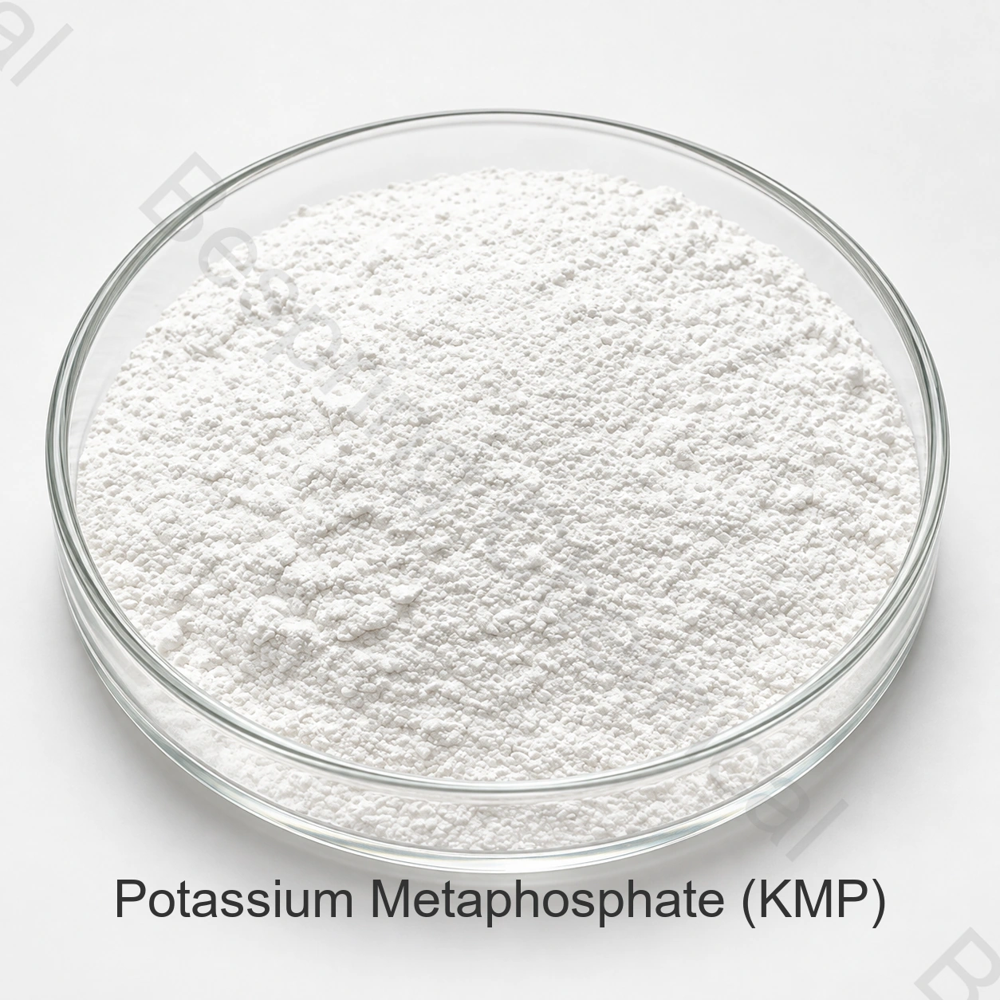

منتجات اللحوم
تُختبر الرطوبة والقوام والتفاعلات المعدنية في نظام الفوسفات الفعلي.
فوسفات غذائي · ملح البوتاسيوم · CAS 7790-53-6
ميتافوسفات البوتاسيوم فوسفات مكثف يُقيَّم للتفاعلات المعدنية وإدارة الرطوبة والقوام في أنظمة غذائية مناسبة. تشمل مواصفة الاختيار الشكل البوليمري وسلوك الذوبان وطريقة الاختبار والتطبيق.
يشمل تطبيق الأغذية، وتحديد الأهداف، والكمية، والمقصد، والوثائق المطلوبة.

نبذة عن المنتج
ميتافوسفات البوتاسيوم KMP ملح فوسفات مكثف، ورقم CAS التجاري 7790-53-6. تُمثّل KPO3 وحدة الصيغة العامة؛ ولا تصف وحدها طول السلسلة أو سلوك الدرجة.
تعتمد النتائج على بنية الدرجة وسلوك الذوبان والوصفة والجرعة والمعالجة ومتطلبات سوق الوجهة.
مجالات الاستخدام
تُقيَّم التطبيقات في الوصفة والعملية الفعليتين، ضمن شروط الاستخدام والوسم في سوق الوجهة.
تُختبر الرطوبة والقوام والتفاعلات المعدنية في نظام الفوسفات الفعلي.
تُقيَّم التفاعلات المعدنية والاستحلاب والقوام وفق التركيبة والمعالجة.
تُختبر الذوبانية والتفاعلات مع البروتين والثبات الحراري.
تُقيَّم إدارة الرطوبة والقوام ضمن شروط الاستخدام والوسم في السوق المقصود.
يُختبر احتجاز الأيونات في الماء والوصفة الفعليين؛ اسم الفوسفات لا يحدد سلوك الدرجة.
تُقاس النتائج أثناء التصنيع والتخزين مع ضوابط الأكسجين والتعبئة، دون وعد ثابت بمدة الصلاحية.
المواصفات الفنية
القيم أدناه مواصفات تجارية مرجعية، وليست نتائج دفعة أو إثبات مطابقة معيار بعينه. تُحدد حدود القبول وطرق القياس وأساس النتائج في مواصفة الشراء.
| عنصر الاختبار | وحدة | المواصفة |
|---|---|---|
| P2O5 المحتوى | % | 53.5–61.5 |
| زرنيخ (As) | % | ≤0.0003 |
| المعادن الثقيلة (كمقدار Pb) | % | ≤0.001 |
| الفلور (F) | % | ≤0.001 |
| الرصاص (Pb) | % | ≤0.0002 |
| اللزوجة — تُحدد الوحدة والطريقة تعاقدياً | 10 | ≤10 |
| الرقم الهيدروجيني (pH) | — | 3.0–5.0 |
| المظهر | — | مسحوق أبيض |
أساس المقارنة والقبول: بند اللزوجة ذو وحدة 10 وقيمة ≤10 لا يحدد وحدة فيزيائية قابلة للمقارنة. لا يُستخدم للقبول قبل الاتفاق على الوحدة والتركيز والحرارة وطريقة الاختبار. تتطلب مقارنة pH تحديد تركيز التحضير ودرجة الحرارة.
التقييم لأغراض الشراء
وتقارن الموافقة المفيدة المصدر المعروض بعملية الغذاء والسوق الفعلية بدلاً من الاعتماد على اسم المنتج وحده.
تأكيد رقم CAS والصيغة وP2O5ملوثات ومظهر وطريقة كل اختبار حرج
طلب المواصفات/TDS، SDS، COA التمثيلي أو الدفعي والمستندات القابلة للتعامل مع HACCP، الكوشير، الحلال، وISO المناسبة.
قيم KMP في الصيغة والعملية الحقيقية من حيث الذوبانية، والتفاعلات المعدنية، والملمس، واللون، والنكهة، وأهداف عمر الصلاحية.
التخزين والمناولة
أسئلة المشتري
ميتافوسفات البوتاسيوم فوسفات مكثف يُقيَّم للتفاعلات المعدنية وإدارة الرطوبة والقوام في أنظمة غذائية مناسبة. تشمل مواصفة الاختيار الشكل البوليمري وسلوك الذوبان وطريقة الاختبار والتطبيق.
الصيغة KPO3 يحتوي على البوتاسيوم بدلاً من الصوديوم، وهذا لا ينشئ في حد ذاته مطالبة بالتغذية أو التوسيم في مجال الأغذية؛ وراجع الصيغة الكاملة والقواعد المحلية.
والإشارة الموردة هي 25 كيلوغراماً لكل كيس، و20 طناً مترياً لكل حاوية طولها 20 قدماً، و500 كيلوغرام كحد أدنى، وتأكيد التفاصيل الحالية في المقتطفات والخطوط والتحميل.
تقديم التطبيق الغذائي المقصود والمواصفات المستهدفة وطرق الاختبار والكمية والتعبئة وميناء الوجهة والمستندات المطلوبة وجدول التسليم.
فوسفات البوتاسيوم ذات الصلة
فوسفات البوتاسيوم المكثف بتكوين مختلف والمواصفة المقدمة.
فوسفات يُستخدم في أنظمة التخزين المؤقت، أوساط الزرع والتخمير المحددة.
ارتفاع مستوى الفوسفات الألكليني الكالسفلي في نخبة من نظم تجهيز الأغذية.
توريد وفق المواصفات المتفق عليها
اذكر التفاصيل الفنية والتجارية اللازمة لتقييم الدرجة وإعداد عرض السعر.